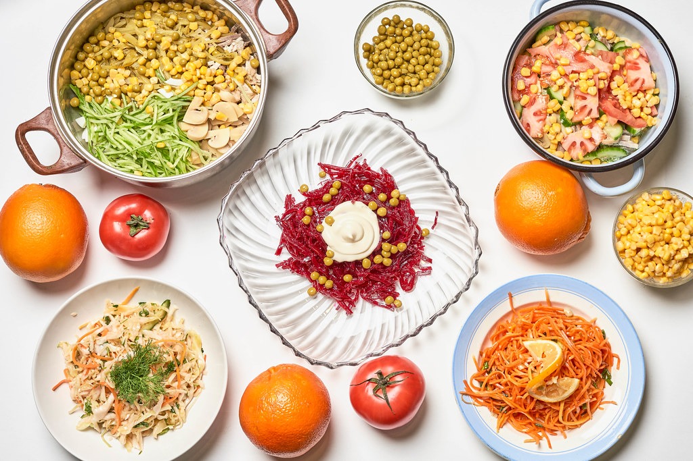
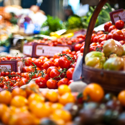
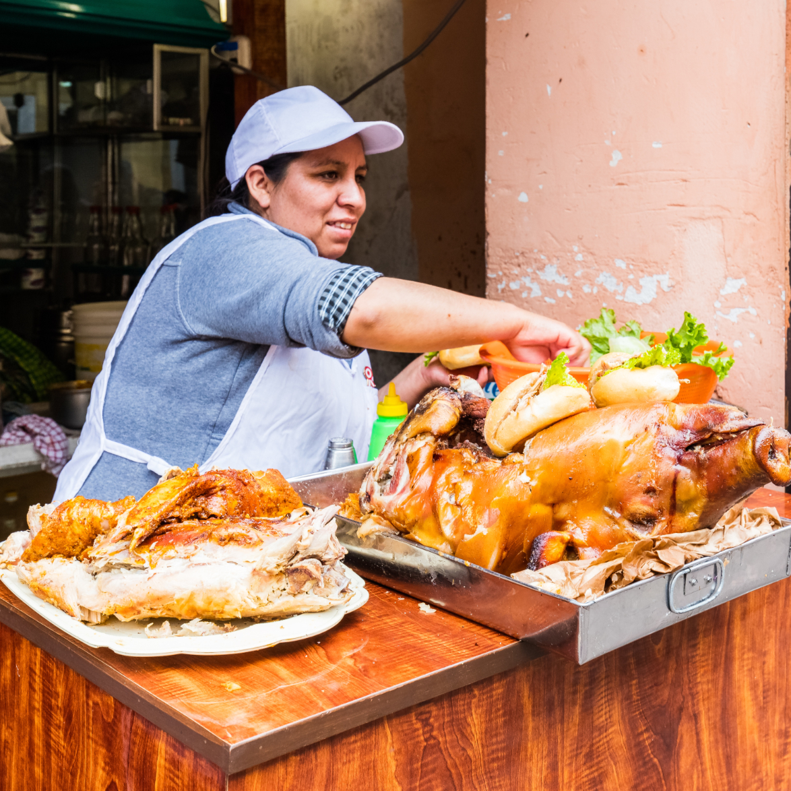

Have you ever wondered what the food you eat everyday can tell you about where you come from? Have you ever wondered why people from different parts of the world eat different types of food? Do you ever ask yourself why certain foods or culinary traditions are so important to your culture? There is more of a connection between food and culture than you may think. Since the beginning of time food has defined locations from around the world. You can learn a lot about a culture by simply indulging in there culinary traditions. People from different cultural backgrounds eat different foods. The areas in which families live and where their ancestors originated influence food like and dislikes. These food preferences result in patterns of food choices within a cultural or regional group. We should embrace our heritage through our culture’s food but we should also become more informed about other cultures by trying their foods. It’s important to remember that each dish has a special place in the culture to which it belongs, and is special to those who prepare it. Food is a portal into culture, and it should be treated as such.
  